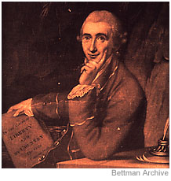

PROMOTING INTEREST IN YOUR REVOLUTION
|
|
Thomas Paine  Brother JS has been reading the great American revolutionary spokesmen and makes this observation: Talented writers and orators are a major asset. The American colonies were fortunate to have many. Their words were inspiring and easy to repeat. As early as 1765, Patrick Henry, a member of the Virginia House of Burgesses, raised the cry, "If this be treason, make the most of it." Thomas Jefferson, another Virginian, created the Americans' great Declaration of Independence with his magnificent words on man's inalienable rights. And when the war seemed nearly lost, in 1776, pamphleteer Thomas Paine put forth such heartening thoughts as: "What we obtain too cheap, we esteem too lightly. . . it would be strange indeed if so celestial an article as Freedom should not be highly rated." |